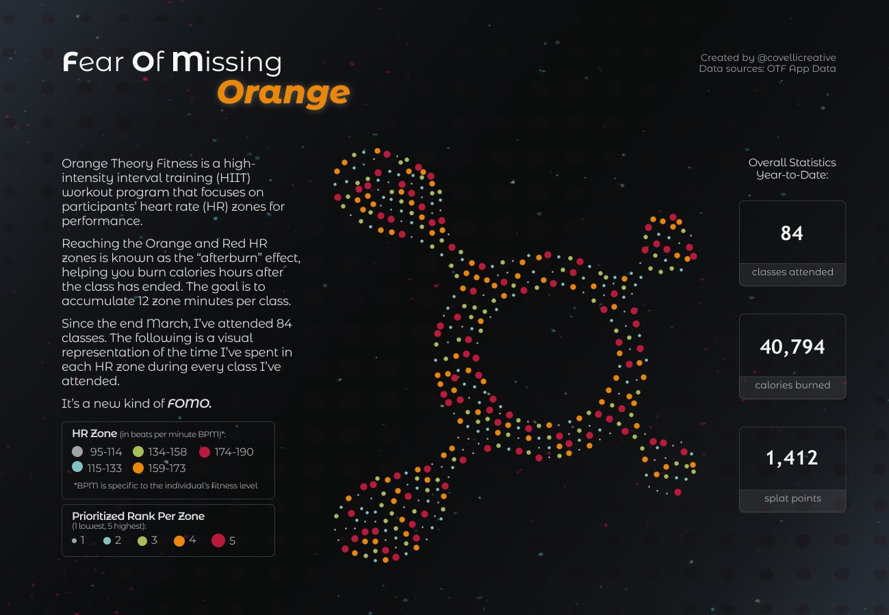
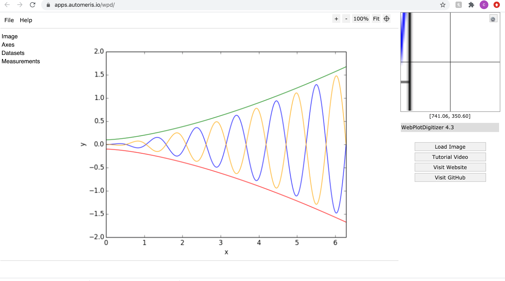
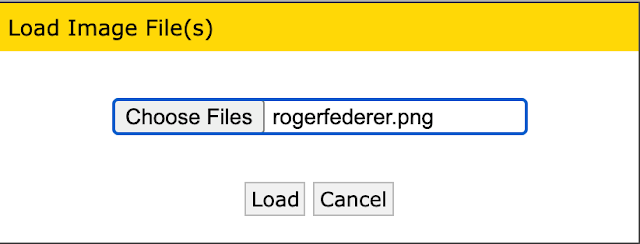
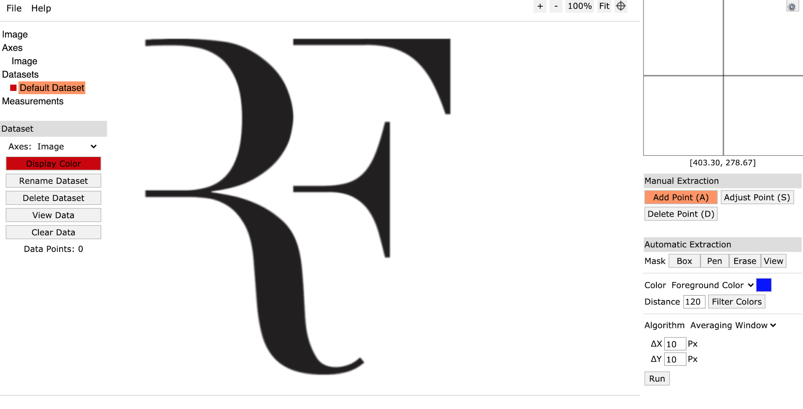
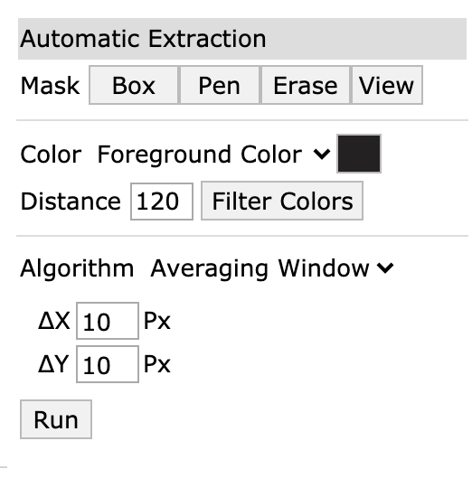
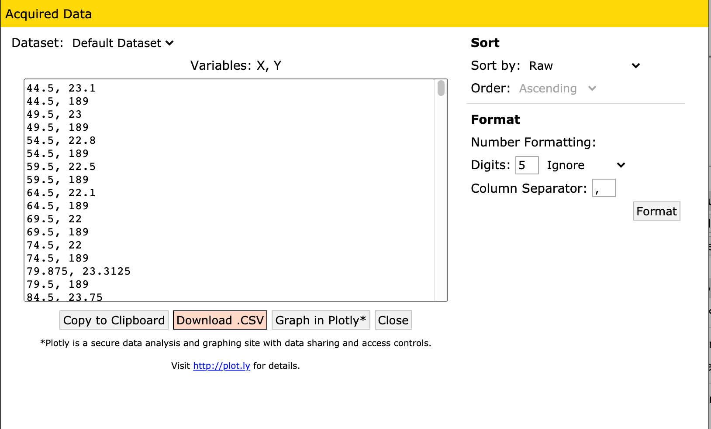
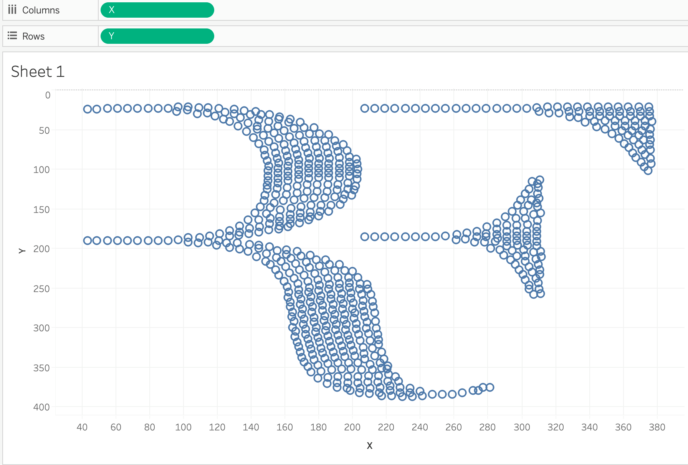

Shape Making In Tableau
Hi all, I wrote the following blog back in 2020 for Amar Singh's site here, on how to make shapes. Tina Covelli recently reminded me of it when tracking her own HITT workouts.  Since 2020, I've simplified the blog - which you can now read below: By all means follow along the steps below to create your own data points from a vector image.What you’ll need:
- A dataset, preferably between 500-4000 rows.
- An image vector you want to put your points in the shape of. (such as the RF logo)
The original data I used for the visualisation can be found here.
But the data can be found now in Github.
I stitched together the 2010-2020 datasets of where Roger Federer was named the winner or loser from the ATP records.
Step 0: Decide on the data you are using.
For my dataset, you will note there are three final sheets;
Original: Our original 659 games between 2010-2020.
RF: The logo co-ordinates of X and Y that we will create and then match to our dataset. (659 points)
RF & Logo: Where I duplicate the dataset to have a view column that toggles between the logo and the RF logo. (659 points x 2 Views)
There are 659 games he played during this time. This will become important later on.
Open the site automeris.
File, Load Image(s), Locate the Logo you want to use in this case I used a plain black vector of Roger Federer’s brand. A simple Google of it will do, if not take the one from here.
{kind=link}

Feel free to use your own image vector, but for simplicity sake, for now I’d advise using a one-block colour vector (If you start to use an image with various colours you will have to export multiple datasets as seen in step 5)
Plot type: Image, align axes.
Step 4: Within the bottom left hand corner we see the Automatic Extraction Mask box. I’ve amended the (Foreground) colour to be the black as seen in the logo. This is where I want my dataset to create points for plotting.
The distance and ΔX and ΔY Px determine the spacing between the co-ordinates plotted. Have a play around with various combinations to see its functionality.

Hit run!
You will see co-ordinates of X & Y appear across the chosen colour (Black) these co-ordinates we can later plot in Tableau.
Note: If you want to use various colours you will have to repeat this process over using the different foreground colours of your image and clicking run.

Time to readjust our X and Y values and distance until they look appropriately spaced and are as close to the number of data points in our data set. See within my print screen it shows I have only 609 points. Therefore I need to adjust my X and Y to be smaller to re-run with more datapoints until I am equal or slightly above 659. This is because when we come to plot the points we want to give each co-ordinate a specific game reference!
Note: It’s super hard to get a perfect match. Better to get slightly too many points and delete a few using a Rand() function in excel.
View Data!
Once we view the data we will see our logo is a series of X-Y co-ordinates. It is personal preference how you download this. Personally I download to a .CSV
Assign X-Y Co-ordinates to our dataset.
Copy and paste into two new columns headered X & Y the new 659 points against our original data.
As you can see in the ‘RF’ sheet, we have now added the X and Y columns we have just downloaded into our dataset. This is essentially giving each of our games an X & Y co-ordinate.
Open Tableau!
Connect to our new RF sheet that we just created.
Open a New Sheet
Drag X onto Columns, and Y onto Rows.
Make sure both are continuous dimensions. The marks type should automatically switch to being a circle, but you can also play around with other shapes.

Because we have assigned each point an X and Y value, we can now add in the tool. I drag surface onto colour, add all the match details into the tooltip and resize to make the logo look slightly more uniformed. I put round onto size and sorted them by how far in the knockout stages Roger reached. Sizing can become a bit tricky dependent what you size on, so that your image doesn’t lose shape.
 Hope you enjoyed this blog, written 3 years ago, but still can be used today!
LOGGING OFF,
CJ
Hope you enjoyed this blog, written 3 years ago, but still can be used today!
LOGGING OFF,
CJ